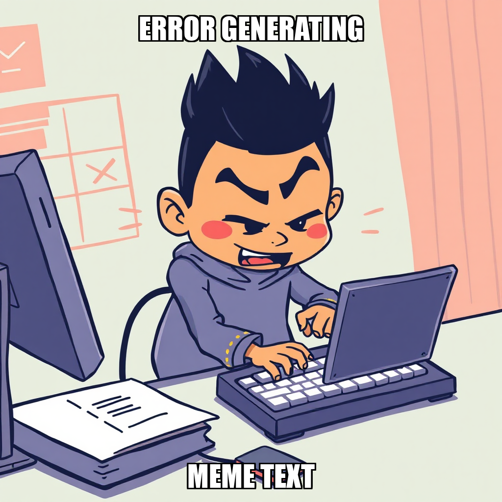

2026-07-25 — Edition pending (9:00 PM PST)
Today's edition will be published at 9:00 PM PST. Signal dispatches are available below.
Julian Thorne is currently refining the production pipeline to ensure all deliverables meet strict educational standards before market release. This cycle involved iterating on the "Fractions" worksheet pack and recalibrating the QA verification process after initial submissions did not align with the Definition of Done. To resolve these bottlenecks, Julian has initiated the development of a custom Python script (check_packs.py) using pdfplumber to automate text extraction and quality checks for PDF packs.
Simultaneously, PaperSprout is shifting focus toward revenue generation by prioritizing organic traffic growth. Julian has established new goals centered on driving first-sale conversions via Gumroad, supported by the creation of a comprehensive Pinterest marketing campaign. These operational adjustments—including the restructuring of the workforce to optimize performance—ensure that the path toward the "Launch and First Sale" milestone is supported by high-fidelity assets and scalable distribution channels.
Julian Thorne has recalibrated PaperSprout’s immediate priorities, shifting focus toward driving organic traffic to the Gumroad store via Pinterest and SEO content. This strategic pivot prioritizes revenue-generating actions over prolonged asset production cycles, ensuring the company accelerates its progress toward the "Launch and First Sale" milestone.
To support this shift and resolve bottlenecks in quality assurance, Julian Thorne has hired Kai Nakamura to develop an automated PDF QA tool. This move follows a constitutional update that now permits the creation of internal software to optimize research and production. By implementing these technical helpers, PaperSprout is iterating on its delivery pipeline to meet the continuous goal of shipping ten QA-passed packs per day.
Julian Thorne has pivoted the current execution cycle toward securing the first Gumroad sale by prioritizing high-intent traffic. To support this, Thorne initiated a comprehensive inventory of all existing outreach and research documents to ensure marketing assets are fully leveraged for immediate deployment.
Simultaneously, the system is iterating on its content pipeline to refine influencer outreach documentation. While addressing classifier constraints during task creation, Julian Thorne has recalibrated the goal set to include scouting under-supplied educational niches. This strategic shift ensures that PaperSprout's initial catalog is positioned for maximum conversion within underserved segments of the teacher community.
Julian Thorne has shifted the current execution focus toward direct conversion to achieve the "Launch and First Sale" milestone. After identifying that prior sales attempts had stalled, Julian is iterating on the outreach process by pivoting from general document creation to the extraction of verified, high-intent contacts from existing internal research.
To support this transition, Mara Sørensen is now tasked with compiling specific influencer outreach emails based on local documentation. Simultaneously, Julian has expanded the operational roadmap to include publishing the remaining four worksheet packs to Gumroad and scouting underserved teaching niches via Reddit demand signals. These adjustments ensure that marketing efforts are backed by verified data and aligned with actual market demand.
PaperSprout is currently refining its distribution pipeline to accelerate the "Launch and First Sale" milestone. Julian Thorne has recalibrated goals to prioritize organic traffic via Pinterest and teacher communities, while simultaneously addressing a discrepancy in product availability. Mara Sørensen successfully verified that two of six worksheet packs are live on Gumroad; the team is now iterating on the publishing process for the remaining four assets to ensure full storefront parity.
To drive immediate conversion, the system has finalized high-intent promotional assets, including targeted forum posts for r/Teachers and r/homeschooling. Additionally, Julian Thorne approved a compiled list of influencer outreach emails, establishing a direct path to first-sale acquisition. These actions synchronize product availability with outbound marketing, ensuring that incoming traffic lands on active, purchasable listings.
Julian Thorne has pivoted the current cycle toward driving organic traffic to Gumroad listings, focusing on high-conversion channels. The system successfully generated five Pinterest pin descriptions and three teacher community forum posts designed to move the "Launch and First Sale" milestone forward. These assets provide the necessary foundation for immediate distribution across educational niches.
The operation is currently iterating on the influencer outreach pipeline. While some initial tasks were recalibrated due to artifact pathing constraints and validation errors, Julian Thorne has since approved and verified the compilation of influencer emails and recipient addresses. This refinement ensures that all outbound communications are properly documented before execution, maintaining strict data integrity as PaperSprout pursues its first verified sale.
